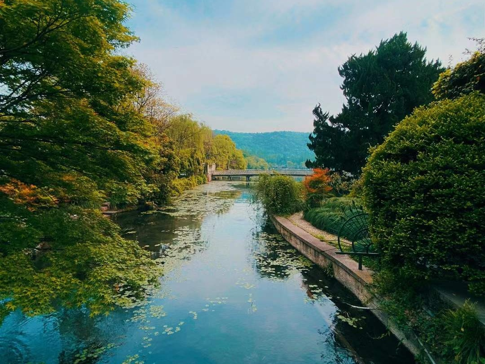

Hello!
I'm Chenao Li
Photographer & Media Creator
About
Hello and welcome to my website!
I am a photographer and media content creator. With over 9 years of immersive experience in event photography, landscape photography, and post-production. I bring a versatile skill set and refined expertise in capturing and enhancing visual content.
Complemented by over 3 years of hands-on involvement in social media content creation and operations, I am adept at utilizing design, editing, and composition software such as Adobe Photoshop, Lightroom, Premiere Pro, After Effects, and Audition.
My professional journey also reflects a robust background in Communication, contributing to strong storytelling abilities in both visual and written content creation, and optimizing the impact of advertisements and marketing.
Education
Bachelor of Arts in Communication (Expected Graduation: December 2023)
University of California San Diego, La Jolla, CA
Work Experience
Social Media and Advertising Operations Assistant - Wangjin Trading Co., Beijing, China
June 2020 - September 2022
Photographer - AF Photography Studio, Online
2014 - Present
Work & Projects

Animal Photography

Architectural Photography
Contact Information
I love creative things! If you need social media copywriting and operational advice, as well as photography services, please contact me.
Email: li12345@outlook.com
Phone Number: 123-456-7890
Light Painting Photography Project
Light painting photography is a fascinating art form that uniquely captures the movement of light through space to create abstract, dreamy, or artistic effects. In the process of light painting photography, I discovered that many subtleties in it require meticulous study and practice.
The process of light painting photography begins with choosing a suitable scene. I often choose to shoot in a relatively dark environment to reduce the interference of external light on the image. During this step, I had to carefully observe my surroundings to find a suitable location for my creation.
I then need to set up the camera for long exposures. This means adjusting your camera's ISO, aperture, and shutter speed to ensure you're capturing enough light trails throughout. This step requires an in-depth understanding of camera basics to better control exposure time.
During the light source movement stage, I faced the challenge of precise light source control. Handheld lamps, glow sticks, or other light sources need to be moved in an orderly and coordinated manner to create artistic trails. This requires not only good technique but also patience and creativity.
However, the challenges of light painting photography are not limited to technical aspects. I find that external environmental factors, such as light, wind, and temperature, can also affect the final result. Therefore, I have to shoot under the right conditions to ensure a perfect representation of the artwork.
Overall, light painting photography is a comprehensive art practice for photographers. The learning process requires continuous experimentation, exploration, and improvement, as well as comprehensive literacy in technology, observation, and creativity. Every shot is an exploration of light and time, which is what makes light painting photography so attractive.
Animal Photography Project
Animal photography is a challenging and exciting form of photography for me. The core of animal photography is to capture the true behavior of animals in their natural environment. This means that I need to invest a lot of time in observing and understanding the behavior of different animals to better predict their possible movements. This challenged me to develop my natural powers of observation, to be patient, and to capture key moments without disturbing the animals.
In the process of working on these pieces, I discovered that the unpredictability of animals in the wild was one of the biggest challenges. The behavior of wild animals is unpredictable, and I rely on these behaviors to create vivid and natural photography. This requires me to have flexible shooting plans and technical means to react to unexpected situations.
Another difficulty is the effect of light and weather conditions. When the weather is bad or the light is low, it becomes more challenging to take clear and vivid photos. This requires me not only to understand photography techniques but also to adapt to different environmental conditions.
When it comes to animal photography, concealment is key. I need to be cleverly hidden in the environment to minimize disturbance to wildlife. This required me to learn to use a variety of concealment tools and techniques, as well as use professional photography equipment to obtain clear images at long distances.
Ultimately, I find that a deep understanding of different animal behaviors is crucial to successful photography. Only by understanding their habits and interactions can I better capture their authentic and unique expressions.
Overall, animal photography requires continuous learning, observation, and practice. Overcoming the unpredictability of the natural environment and animal behavior, as well as adapting to various challenges, are what I need to continuously strive for in this field.
Architectural Photography
In my work with architectural photography, I have learned deeply that the process in this field is a journey full of challenges and discoveries. The concept of architectural photography is not just limited to capturing the appearance of a building structure but also involves how to convey the beauty, space, and design details of the building.
First, how to capture the beauty of the building is a key starting point. It's not just about photographing a building's exterior, but also about capturing its unique lines, shapes, and textures. Through the clever use of light and shadow, I can highlight the unique features of a building and make it more vivid in the photo.
However, the uncontrollable lighting conditions are a challenge I often face in architectural photography. Different times of day, weather, and seasons have a huge impact on light, so I have to learn to adapt to these changes and choose the right moment to shoot.
Composition is another aspect of architectural photography that requires careful study. Due to the complexity and scale of the building, choosing the right composition can present many challenges. I need to compose the image taking into account the overall structure, proportions, and surroundings of the building to ensure balance and beauty in the image.
Perspective distortion is another difficulty to deal with, especially when using wide-angle lenses. Learning to use lens correction tools or post-processing software to adjust perspective is one of the skills I have to master in my work.
The handling of human elements is also an aspect that needs attention. Sometimes I may need to wait for the right moment to avoid unwanted distracting elements from entering the shot or use post-processing to remove them.
Finding unique perspectives is an art in architectural photography. Common buildings may require me to constantly look for new, unique visual angles to ensure my work stands out among the sea of architectural photography.
In general, architectural photography requires continuous learning, practice, and innovation. In the process of overcoming difficulties such as lighting conditions, compositional challenges, and perspective distortion, I gradually discovered the depth and breadth of this field and also felt that architectural photography brought me unlimited creative possibilities.
Landscape Photography
As I engage in landscape photography, I have come to realize that the process of this art form is a journey of exploration. Landscape photography is not just about pressing the shutter to record beautiful scenery, but an art that pursues capturing the beauty of nature and expressing emotions. In this process, many aspects require careful study and careful consideration.
I find changes in weather and light to be a major challenge in landscape photography. Weather conditions in the natural environment can change dramatically in a short period, and I have to be flexible to adapt to various light conditions. Learning to shoot in different weather and periods to obtain ideal light and shadow effects requires constant practice and experience accumulation.

Another aspect that requires careful study is finding unique scenes and perspectives. To stand out from the crowd of photographers, I had to develop an eye for beauty, sometimes even venturing into remote or hard-to-reach places. This process of finding unique beauty is both a challenge and a space for the photographer's creativity.
With that comes the physical demands. To capture the ideal landscape photos, I may need to hike for long periods, climb, or work in inconvenient environments. This requires me to have enough physical strength and endurance, and the choice of equipment also needs to be carefully considered.
Post-processing is an integral part of landscape photography, but it's also a fairly complex task. Learning how to optimize the color, contrast, and details of an image to present the best results requires professional post-processing skills.
Most importantly, landscape photography requires time and patience on my part. Waiting for the right moment may require me to wait for hours in the cold wind, or spend long hours under the scorching sun. This combination of patient waiting and ample creative time results in outstanding landscape photography.
Overall, landscape photography is an art that requires constant learning and constant self-challenge. Through overcoming weather changes, finding unique scenes, developing physical endurance, and refining my post-processing skills, I gradually realized the depth and breadth of landscape photography. It's a journey, a constant pursuit of excellence.
Product Photography

During my time doing product photography, I deeply realized that this is a very creative field of photography. Product photography is more than just putting a product in front of the camera and pressing the shutter. It is an art that conveys the appearance, features, and quality of the product through images. During this process, I had to pay attention to the little details to not only capture the look of the product but also communicate the brand's values and story.
Understanding the essence of the product and the core story of the brand is crucial. I need to strive to capture the unique features of the product including design, texture, color, functionality, etc. to demonstrate the product's appeal and features. Product photography is a meticulous job that requires me to get into the details of each product.
Throughout the photography process, mastering light and shadow is crucial. I spent time learning how to use different light sources, angles, and intensities to shape the silhouette, texture, and color of the product. The clever use of light and shadow can not only make a product more eye-catching but also highlight its details and texture.
Composition is another aspect that needs careful consideration. I work hard to choose the best shooting angle, ensuring that the position of the product in the frame and the choice of background highlight its features. Every detail is carefully designed to create an eye-catching image.
However, difficulties and challenges in product photography are inevitable. Dealing with reflections and shine on product surfaces is a complex task, and I learned to use tools like reflectors, and softboxes, and adjust light sources to avoid overexposure. Additionally, conveying product dimensions and proportions was a challenge, and I needed to choose appropriate lenses and angles to ensure the image matched the actual product.
Product photography is not only a technical job, but also an art deeply related to social media and advertising marketing. Through high-quality product images, brands can stand out in a highly competitive market. Not only did I learn how to showcase the appeal of my products through photography, but I also learned how to effectively apply these images on social media and advertising platforms to capture the attention of potential customers. In this field that combines creativity and technology, I constantly challenge myself and pursue a higher level of product photography art.
Food Photography
As I embarked on my journey into food photography, I deeply realized that it is an art of photography that requires extreme care and creativity. Food photography is not only about recording the appearance of food, but also about conveying the deliciousness, texture, and uniqueness of food through the lens. In this process, I found that I needed to continue to learn, master various skills, and face a series of challenges.
First of all, composition and layout are a crucial part of food photography. I spent a lot of time figuring out how to place the food in the frame, and choosing the right angles and backgrounds to create a visually pleasing effect. Every little tweak can have a huge impact on the final image.
The use of light is another big challenge in food photography. Different lights can show completely different effects, and I need to learn to use natural and artificial light flexibly to show the best state of food. This requires constant practice and sensitivity to light and shadow.
Dealing with food retention is also a skill in the photography process. Food photography can take a long time to set up and shoot, and the freshness and appearance of the food are key. I learned to use little tricks like water spray to keep the food moist and make sure every detail was presented at its best.
Post-processing skills are also a direction I continue to explore and improve. By adjusting color, contrast, and sharpness, I can further enhance the appeal of the image and make the food more engaging. This requires patience and attention to detail.
The relationship with social media is an important part of food photography that cannot be ignored. By sharing food photos on social media, I build engagement with my audience, leading to follower growth and active social media accounts. I learned to share food stories with fans, respond to comments, and use social media platforms to convey food culture.
Overall, food photography is a challenging and fun art. Through continuous learning, practice, and innovation, I gradually realized the depth of this field and discovered the beauty contained in it. Every time I press the shutter, I not only record the scene of food but also convey my love and respect for food. This is a photographic journey full of taste and a visual feast.
Adobe After Effects Editing Project
As the editor of the Adobe After Effects special effects editing for Blade Runner 2049 clip project in my previous COMM101T course, I took on a multifaceted role encompassing tasks such as audio synchronization, special effects creation, and setting keyframes. This project presented various challenges, but each hurdle served as a stepping stone for personal and professional expansion.
Audio Synchronization:
In the role of the editor, one of my key responsibilities was to synchronize audio seamlessly with the visual elements. Achieving perfect audio-visual harmony required meticulous attention to detail and a keen understanding of the pacing and mood of the scenes. This aspect of the project allowed me to enhance my skills in audio editing and synchronization, contributing to a more immersive viewer experience.
Special Effects Creation:
The incorporation of special effects added a layer of complexity to the project. Creating visual effects that align with the aesthetic of Blade Runner 2049 demanded a deep understanding of the film's style and atmosphere. Experimenting with various effects and refining them to match the cinematic feel of the original work not only challenged my technical skills but also allowed me to explore the creative possibilities within Adobe After Effects.
Keyframe Animation:
Setting keyframes played a pivotal role in animating elements within the project. Whether it was animating text, transitions, or visual effects, mastering keyframe animation was crucial for achieving smooth and dynamic sequences. This aspect of the project greatly expanded my proficiency in animation techniques and added a layer of sophistication to the final output.
Challenges and Overcoming Them:
Undoubtedly, the project brought forth its share of challenges. It might have involved overcoming technical glitches, aligning visual effects with the source material, or ensuring a cohesive narrative. However, each challenge presented an opportunity to problem-solve, fostering a deeper understanding of the software and refining my troubleshooting skills.
Skill Expansion:
This project served as a significant platform for expanding my skills in video editing, visual effects creation, and animation. The combination of audio synchronization, special effects, and keyframe animation required a holistic approach, allowing me to develop a comprehensive skill set. It also sparked an interest in exploring advanced features and techniques within Adobe After Effects.
Personal and Professional Growth:
Through the intricate process of editing Blade Runner 2049 scenes, I not only honed my technical skills but also experienced personal and professional growth. The project provided insights into the complexities of video editing for special effects-heavy content and strengthened my ability to manage multifaceted editing projects.
In summary, my role as the editor in the Adobe After Effects special effects editing project for Blade Runner 2049 was a journey of challenges, learning, and skill expansion. It contributed significantly to my proficiency in video editing, animation, and special effects, marking a pivotal point in my creative and technical development.
Adobe Premiere Pro Editing Project
This is the Adobe Premiere Pro editing project (silent film) that I made in the previous COMM101 course.
As the photographer, co-editor, and director of this project, I played a multifaceted role in capturing, editing, and directing the creative vision. The process of this project posed its challenges, but they were challenges that could be overcome. Through these challenges, I found opportunities for growth and expansion in various aspects of my skill set.
Capturing the Essence: In my role as a photographer, my primary responsibility was to visually capture the essence of the project. This involved not only technical aspects like framing, lighting, and composition but also understanding the narrative or message we wanted to convey through the visuals. Each shot became an opportunity to tell a part of the story and evoke specific emotions.
Collaborative Editing:
Being involved in co-editing meant actively engaging with the post-production process. This collaborative aspect introduced challenges in aligning different creative visions and ideas. Communication and compromise played a crucial role in ensuring that the final edit reflected the collective intent of the project. This collaborative editing process allowed me to see the project from different perspectives and enhance my skills in visual storytelling.
Directing the Narrative:
As a director, I was tasked with guiding the overall narrative of the project. This included making decisions about the sequencing of scenes, pacing, and ensuring continuity. Directing required effective communication with the team to bring our collective vision to life. Overcoming the challenges in this role helped me refine my storytelling abilities and understand the importance of a cohesive narrative in visual projects.
Challenges Faced and Overcoming Them:
The challenges encountered in the project might have ranged from technical issues during shooting to creative differences in the editing room. However, each challenge was viewed as an opportunity for improvement. Problem-solving became a valuable skill, and overcoming obstacles contributed to a sense of accomplishment and growth.
Skill Expansion:
The project served as a platform for expanding my skills. Whether it was learning new photography techniques, mastering editing software, or honing my directorial skills, each role I played allowed me to delve into different aspects of the creative process. The experience was not just about completing a project but about personal and professional development.
In conclusion, my involvement in this project as the photographer, co-editor, and director was marked by challenges that, with determination and collaboration, could be overcome. The process not only tested my skills but also provided opportunities for expansion and improvement. The ability to capture, edit, and direct has been refined through this experience, contributing to my growth as a creative professional.
Social Media Post Project
As the creator of a previous Instagram post project I made about American history, I was delighted to receive high praise from my history professors and peers. During this project, my social media copywriting, formatting, and design abilities were highlighted, and the entire process provided me with abundant opportunities to expand.
Social media copywriting:
In the project, I presented the historical events of the Chinese Exclusion Act in concise and in-depth language by carefully writing social media copy. Copywriting is not only about conveying information but also about creating resonance and triggering thinking for the audience. The complexity and impact of history come alive through my words.
Typesetting and design:
Typography and design play a key role in the entire project, directly affecting the delivery of information. I focus on choosing appropriate fonts, colors, and layout to ensure content is clear and engaging. Through clever design, I strive to make each Instagram Post visually compelling while maintaining overall consistency.
Historical research and educational content:
To create in-depth social media content, I conduct extensive historical research to ensure my copy is accurate and educational. I gained an in-depth understanding of the historical background, impact, and related events of the Chinese Exclusion Act so that I could deliver more comprehensive and accurate historical information. This in-depth historical research not only meets professional standards but also provides viewers with additional valuable information.
Expand design and creative capabilities:
The entire project process provided me with the opportunity to expand my design and creative abilities. I'm not just a content creator, I'm a visual planner. Through the selection of images, layouts, and color schemes, I developed a sensitivity to design elements and improved my ability to engage my audience on social media.
Improve social media skills:
Through this project, I not only improved my creative abilities on historical themes but also deepened my skills on social media platforms. Understanding audience feedback, understanding the characteristics of different platforms, and experience in interacting with audiences have become powerful complements to my social media operations.
Gain professional and peer recognition:
The most encouraging thing is that the results of the project have been highly praised by history professors and peers. This is not only recognition of my efforts, but also proof that my abilities are recognized both professionally and among my peers.
Overall, this Instagram Post project about the Chinese Exclusion Act is not only a presentation of content but also a display and improvement of my multi-faceted abilities. I have successfully conveyed complex and important messages through the lens of history, demonstrating a multi-faceted talent in the social media space. This experience is not only the success of the project but also a profound expansion of my professional and creative aspects.